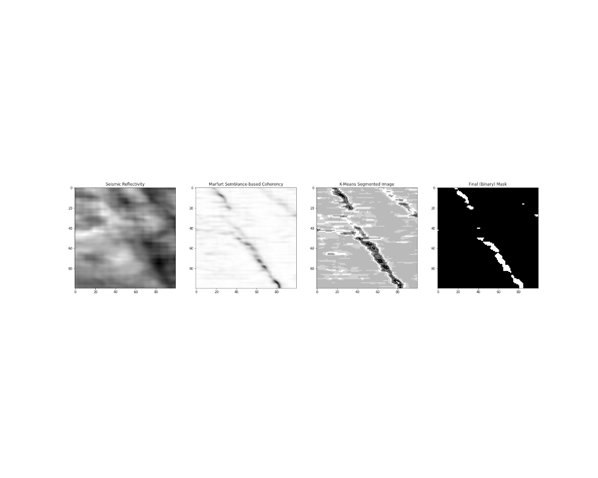
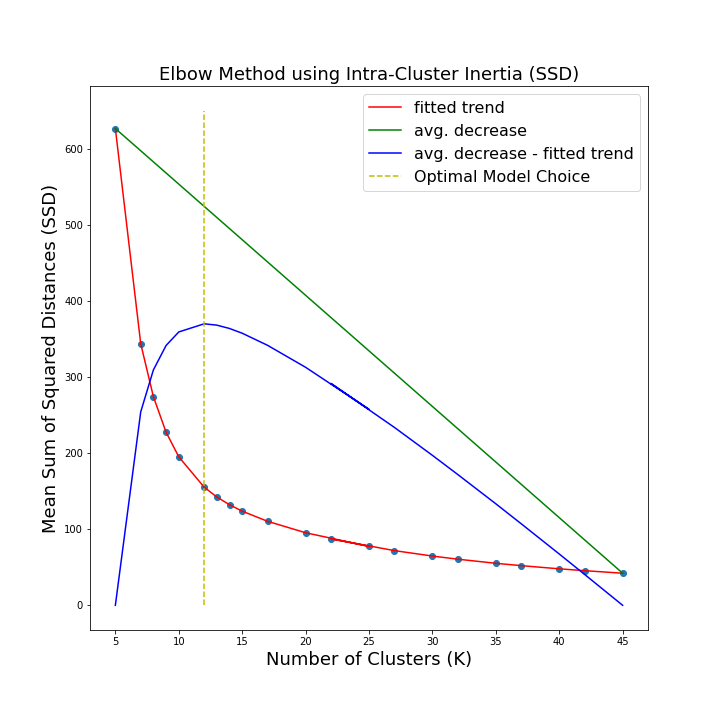
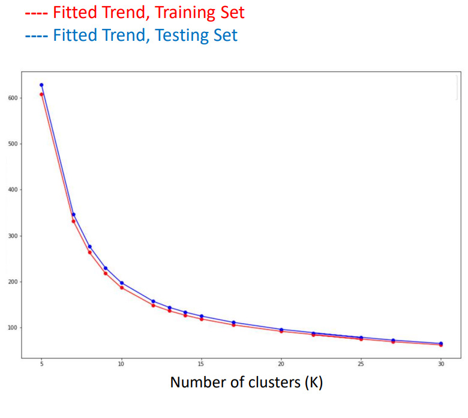
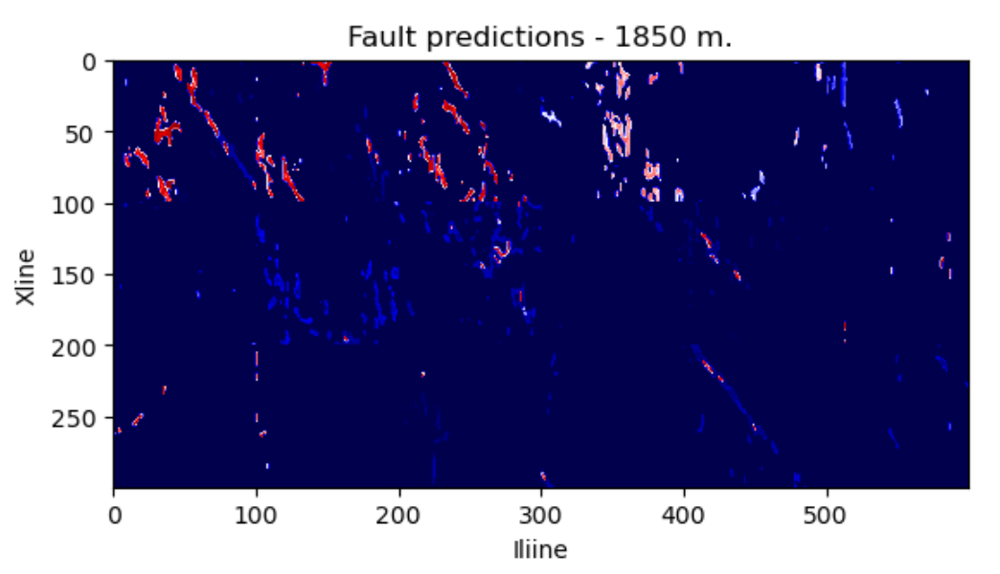
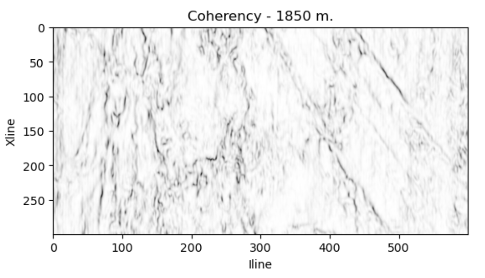
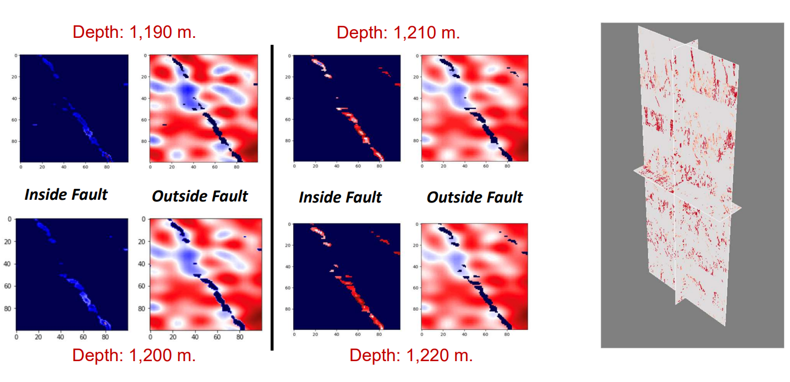

Developing Screening Tools to Assess Subsurface Fluid Storage#
Motivation: Traditional workflows for assessing a subsurface region’s ability to store fluid require ample manual interpretation and destructive collection processes in addition to advanced seismic modeling. With next-generation velocity data recovered from Full-Waveform Inversion techniques of a subsurface region, we aim to automate the entirety of this workflow for fault systems specifically by:
Extracting meaningful data features for a large, raw seismic reflectivity volume by leveraging advanced numerical methods
Developing an unsupervised image clustering model to predict the locations of faults within the volume
Combining and using the predicted volume with velocity data to create a 3D visualization tool and assess predicted fault’s ability to store fluid.
ML Model Development - K-means Clustering#
Initial steps were taken to clean and transform raw seimic reflectivity image data into a numerically derived coherency volume using 3D interpretation. 2D, ‘stackable’ images of these transformations were sent to be trained on a K-Means clustering model, which was developed to highlight large, 3D discontinuities within the volume. Only data with viable intra-cluster intertia values were selected for the final predicted fault locations. This process is shown below, left-to-right.

The clustering model was optimized using a numerical interpretation of the ‘Elbow Method’, with both average sum of squared distances (SSD) and explained variance as evaluation metrics. Shown below is the numerical interpretation that found the optimal number of image clusters for segmentation in this study, with SSD as an evaluator. Additionally, another elbow graph, with SSD as an evaluator, shows that the fitted trends of the training and testing sets is nearly identical, validating the results of the model from model bias or overfitting.
 
Screening Tool (Proposed Workflow)#
As briefly aforementioned, this is a novel approach in combining the information from a predicted fault volume with FWI velocity data into a single, interpretable volume. This provides an initial assessment to whether an extracted fault system can store fluid, by highlighting low- or high-velocity anomalies within the image of the system. The relative velocities of some predicted fault locations are shown in the colored image below, while the coherency volume it was derived from is shown in greyscale.
 
A major advantage of using a binary mask for predicted fault locations is uncovering the relative velocities from both within and outside of the faults, shown below on left. In addition to the data preprocessing, model training, and prediction workflow contained inside a jupyter notebook, a 3D visualization of the volume’s predicted faults/velocities was developed for completing the automation of the manual interpretation of these seismic volumes.

A brief note on results
If afforded more time, there would have been a few avenues to strengthen the power of this screening tool, including:
An investigation into what other seismic features (numerical interpretations of the raw reflectivity volume) may reveal in their ability to better distinguish faults from the surrounding region and other 3D seismic discontinuities.
Developing a supervised image segmentation model using labeled faults.
Optimizing model performance with updated programming methods and migrating model training to high-performance computing environment.
Developing an ecosystem to host a web-version of the 3D, interactive screening tool with better visualization libraries.